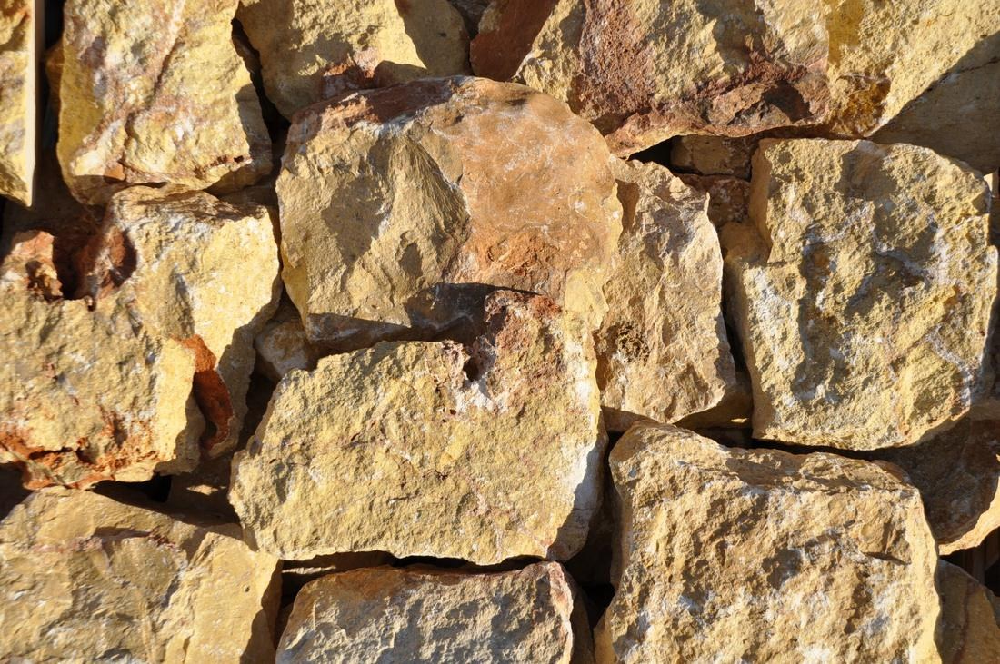
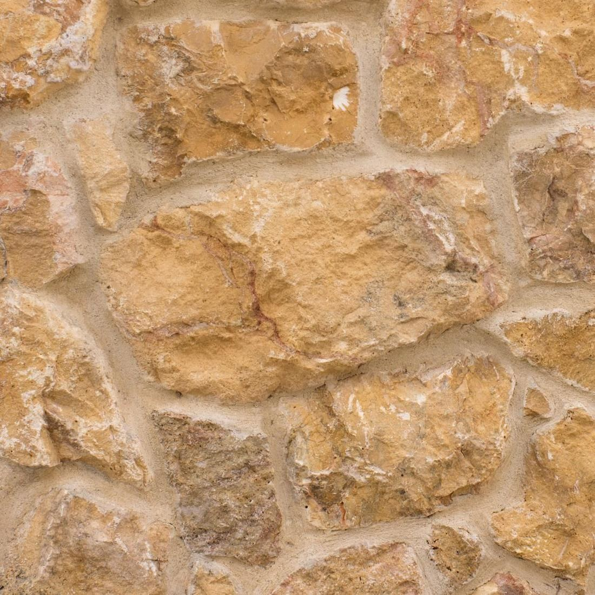

Laid at random
Irregular cladding · Aleppo, Syria
Dark Yellow Mountain Face
Deeper honey and ochre tones, with more colour variation from piece to piece. It gives a wall the look of traditional stone masonry.
Supply
Finish
Rock face, hand-dressed
Applications
Façades, garden and boundary walls, interior feature walls, fireplaces
Format
Irregular pieces, packed by the m² in crates
Colour
Honey, ochre
Thickness
3 cm or 5 cm
Good to know
Colour varies between pieces and deliveries; visit the yard to see the current stock before you order. Mix pieces from several crates as you lay, so shade variation spreads evenly across the wall. Allow 10 % for cutting and selection.
Technical data
Density
2 600 – 2 620 kg/m³
Absorption
0.9 – 1.0 %
Compressive
90 – 170 MPa
Per crate
18 – 20 m² at 3 cm · 11 – 12 m² at 5 cm
Fixing
Cement adhesive on a rendered substrate
Values typical of the rock type from published regional data; a product-specific test report is issued with each order.

Pieces, rock face
Natural Stone